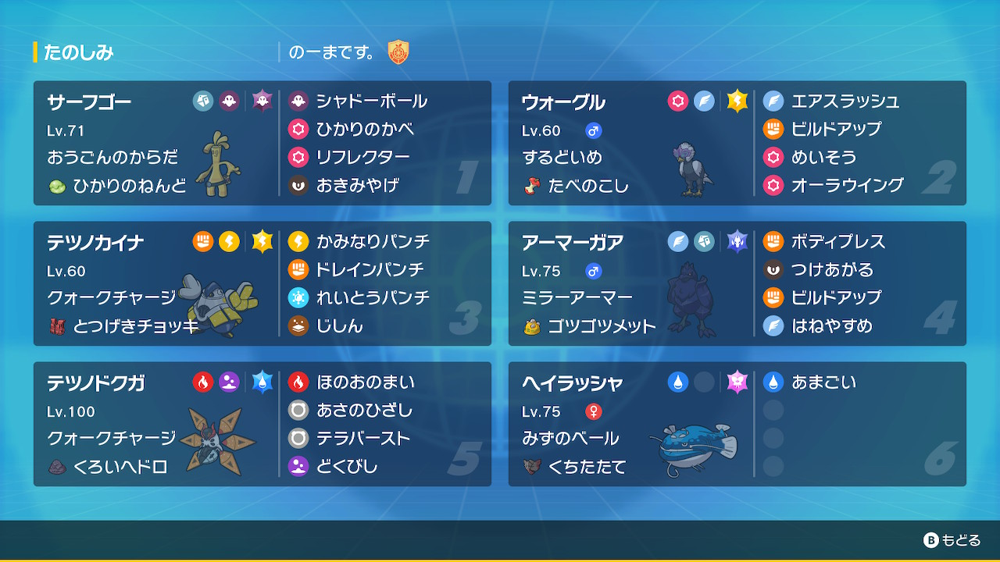

動画
パーティ画像

努力値
サーフゴー @ ひかりのねんど
おうごんのからだ / おくびょう
194(252)-x-115-153-112(4)-149(252)
ウォーグル @ たべのこし
するどいめ / おだやか
208(188)-x-111(164)-133-121(156)-85
テツノカイナ @ とつげきチョッキ
クォークチャージ / いじっぱり
239(76)-198(156)-157(228)-x-93(36)-72(12)
アーマーガア @ ゴツゴツメット
ミラーアーマー / いじっぱり
196(180)-152(252)-135(76)-x-105-87
テツノドクガ @ くろいヘドロ
クォークチャージ / おだやか
187(252)-x-80-161(4)-178(252)-130
ヘイラッシャ @ 見せポケ
おうごんのからだ / おくびょう
194(252)-x-115-153-112(4)-149(252)
ウォーグル @ たべのこし
するどいめ / おだやか
208(188)-x-111(164)-133-121(156)-85
テツノカイナ @ とつげきチョッキ
クォークチャージ / いじっぱり
239(76)-198(156)-157(228)-x-93(36)-72(12)
アーマーガア @ ゴツゴツメット
ミラーアーマー / いじっぱり
196(180)-152(252)-135(76)-x-105-87
テツノドクガ @ くろいヘドロ
クォークチャージ / おだやか
187(252)-x-80-161(4)-178(252)-130
ヘイラッシャ @ 見せポケ